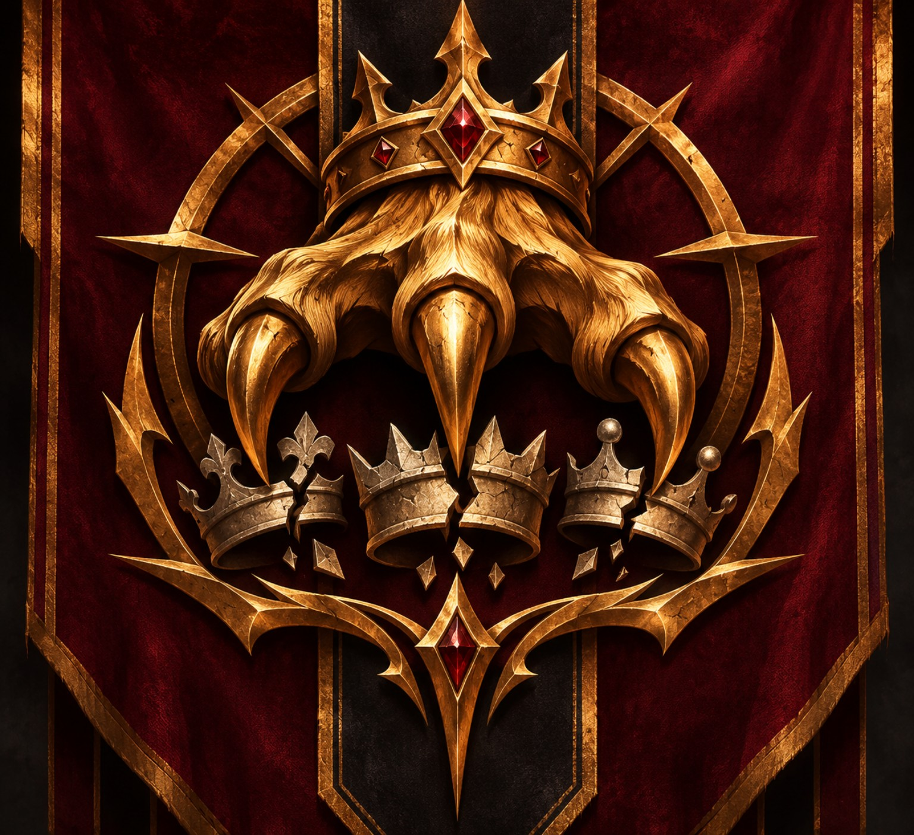
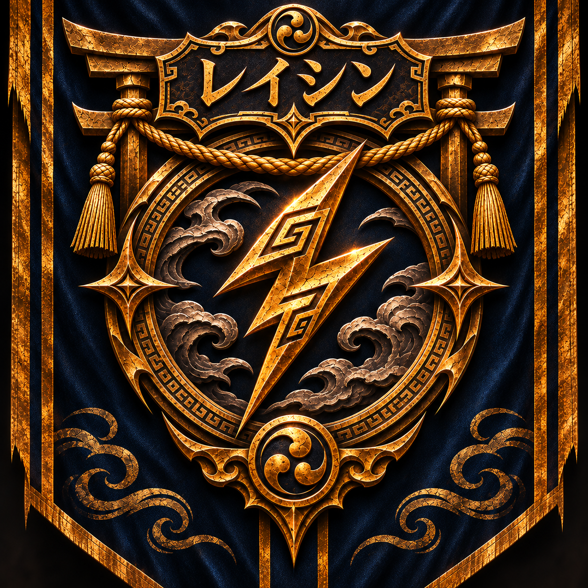
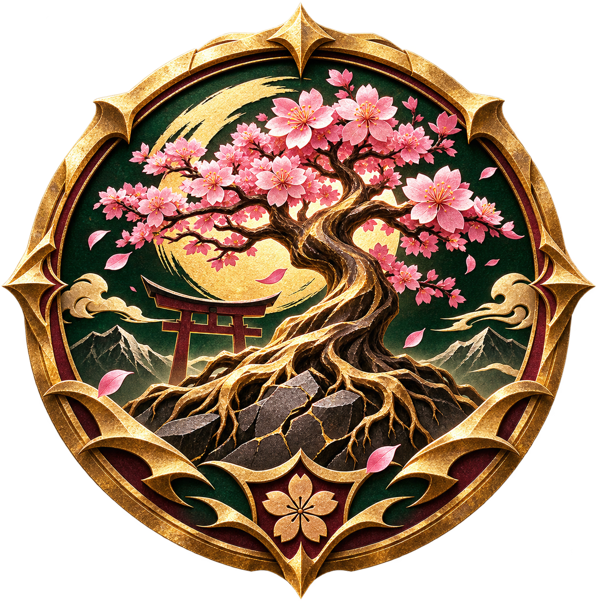
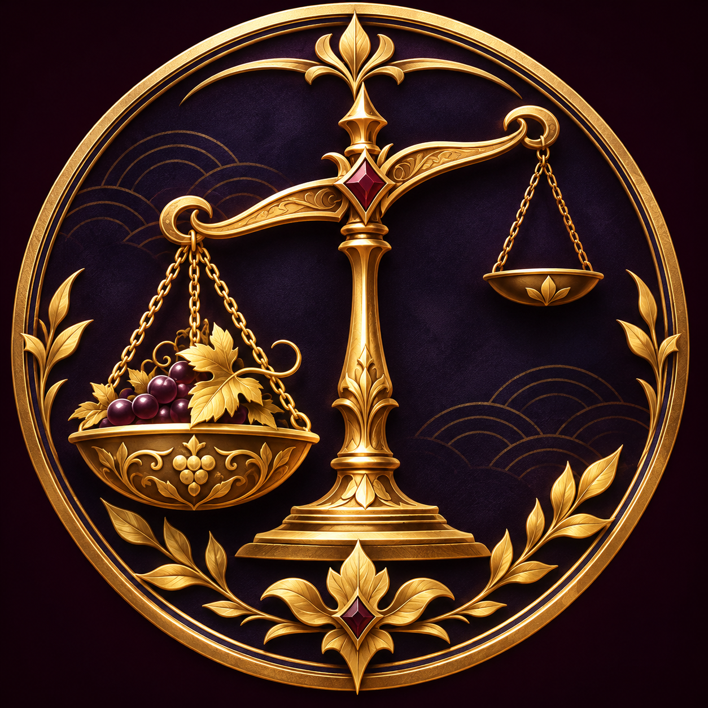
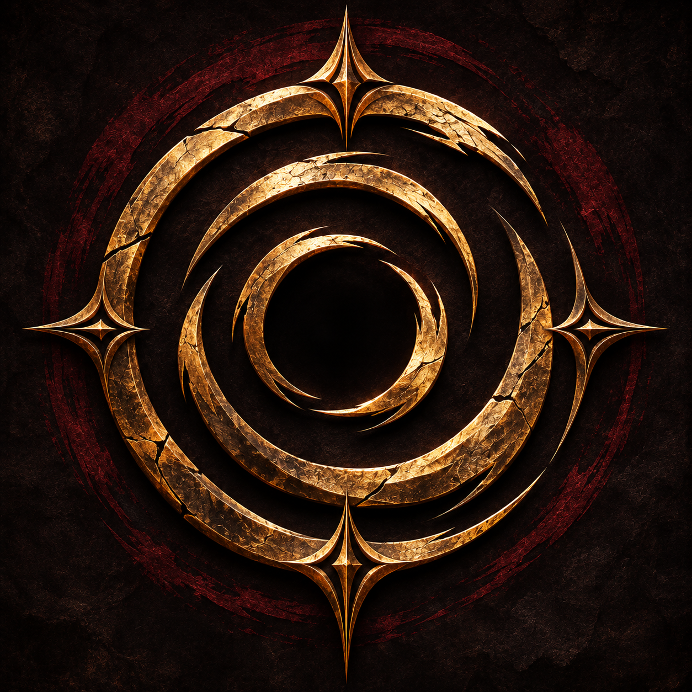
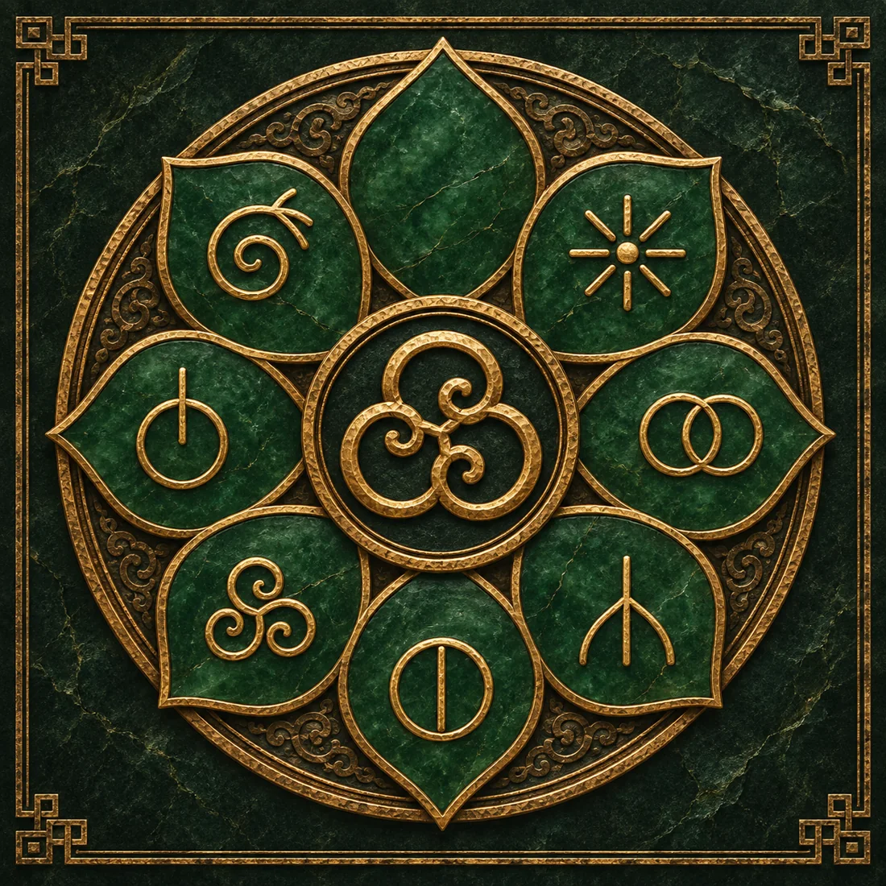

Only artwork expressly approved for the canon is documented here. Additional symbols will appear after their design is approved.
Kingdoms & Houses8 approved crests

♛
The Conqueror's ClawCanonical original illustration approved. The canonical image remains unchanged in design. The original approved artwork is displayed in full.
01 / THE LION KINGDOM — CANON APPROVED
The Conqueror's Claw
The Lion Kingdom · Royal Insignia
POWERCONQUESTROYAL SUPREMACY
The royal lion's claw descends from a sharp imperial crown and crushes three fallen crowns beneath it. The insignia embodies the kingdom's claim to conquest, domination and unquestioned authority.
Its canonical palette is antique gold, deep crimson and black. The reference artwork is fixed: future uses must preserve the design rather than inventing a new crest.

02 / HOUSE RAI — CANON APPROVED
House Rai Reishin
House Rai · Legacy of Lightning
レイシン
LIGHTNINGLEGACYPROTECTION
An ancient crest carried by the House of Rai. A weathered golden lightning bolt rises from sculpted storm clouds within an ornate circular seal. The Japanese lettering レイシン names the legacy of Reishin.
The canonical insignia retains its midnight-blue and antique-gold palette, storm-cloud engravings, ceremonial cords and original form. No crossed swords or flowers.
The ancient lightning
The central mark of Rai's lineage, its strength and enduring legacy.
The storm seal
Aged metalwork and sculpted clouds surround the lightning in an ancestral ceremonial crest.
The family name
レイシン is the Japanese phonetic spelling of Reishin, preserved on the approved crest.
✧
Tree of LifeApproved canonical artwork; full-resolution image import is pending.
03 / ORDER OF MAGES — CANON APPROVED
Tree of Life
The Order of Mages · Ancient Arcane Seal
KNOWLEDGEBALANCEANCIENT MAGIC
The Order of Mages carries the Tree of Life as its ancestral emblem. Its spreading branches signify the many paths of magical knowledge, while its entwined roots honor the origins of the arcane arts.
The approved insignia combines a bronze-copper tree, engraved rings, turquoise gemstones and a deep violet field. The original design must be preserved without replacing its forms.
The branches
The diverse disciplines and expanding understanding of magic.
The trunk and roots
Balance, discipline and the ancient foundations of magical knowledge.
The arcane ring
An enduring seal of continuity and interconnected power.

04 / SAKURA VILLAGE — CANON APPROVED
Roots of Eternity
Sakura Village · Village Insignia
BLOSSOMRENEWALRESILIENCE
An ancient sakura rises from fractured black stone. Its golden roots overcome the rock while its branches burst into pink blossoms, symbolizing the power of life to renew itself even after destruction.
The canonical artwork combines antique gold, deep forest green, burgundy and pink blossoms, with a torii gate and mountain landscape. This approved design replaces the earlier village insignia; lightning remains exclusive to House Rai.
The flowering sakura
Life, renewal and the promise of a new beginning.
The roots and broken stone
Resilience: even the hardest obstacles cannot extinguish life.
The golden seal
Enduring heritage and continuity between generations.
Sakuranbo SchoolThe approved original emblem's image is temporarily unavailable.
05 / SAKURANBO SCHOOL — APPROVED ARTWORK
Sakuranbo School
さくらんぼ学園 · Sakura Village Academy
EDUCATIONGROWTHOPPORTUNITY
From a small village to the wider world. An open book represents the knowledge that begins a journey, the village school represents home and belonging, and a flowering sakura reaches toward the globe, symbolizing limitless possibility.
The Japanese school name is part of the artwork. The original golden, pink and burgundy composition is preserved without redrawing. The image is temporarily hosted externally pending permanent archive storage.
The open book
Learning is the first step on the journey beyond the village.
The small school
A reminder that a modest beginning can nurture extraordinary ambitions.
The globe and blossom
Through growth and education, the world opens beyond the village borders.

06 / HOUSE OF SAKURA VILLAGE HEAD — CANON APPROVED
The Weighted Scales
Okana's Family · The Village Head's House
WEALTHSTATUSSUPREMACY
The scales are deliberately unequal. The left pan hangs low beneath the weight of dark grapes and gilded vine leaves; the other hangs high and almost empty. This is not a symbol of impartial justice: the family presents its own wealth, prestige and authority as the power that tips the balance.
A jewel-red stone crowns the center, surrounded by antique-gold ornaments on a midnight-violet field. The grapes connect the house to the prosperity of Sakura Village, while the rich metalwork expresses inherited privilege. This is the personal crest of the village head's household, separate from the official emblem of Sakura Village.
The lowered pan
Weight, wealth and a claim of social superiority: the house intends to outweigh all rivals.
The grapes
An emblem of inherited prosperity and the family's privileged position within Sakura Village.
The raised pan
Almost empty and placed higher, it makes the deliberate imbalance unmistakable.

07 / MORTIEL LATUSHA — CANON APPROVED
The Primordial Void
Mortiel Latusha · Ancient Personal Seal
DARKNESSEXISTENCEETERNITY
Three weathered golden rings surround an impenetrable black center. The outer ring represents the darkness before creation, the middle ring the temporary nature of existence, and the inner ring the return to darkness. At the center lies the eternal void.
Mortiel carries this ancient personal seal independently of the royal insignia of the Lion Kingdom. Its approved artwork is preserved in antique gold, black and deep crimson.
始まりに闇、終わりに闇
In the beginning, darkness. In the end, darkness.
The outer ring
The darkness that preceded creation.
The middle ring
Existence, temporary and ever-changing.
The inner ring and void
The return to darkness, surrounding the eternal void at the center.
The claw
The central expression of raw force and the ability to overpower rival rulers.
The broken crowns
Three crushed crowns represent conquered kingdoms and royal authority brought low.
The imperial palette
Antique gold signifies sovereignty; crimson and black establish a severe, unmistakable royal identity.

08 / KONGENDŌ — CANON APPROVED
Kongendō The Way of the Source
根源道
UNITYINNER POTENTIALENDLESS DEVELOPMENT
An ancient spiritual tradition studied by Master Sairan in the mountains, from which he developed Raihatsu-dō. Its purpose is to cultivate the unity of body, consciousness and spirit, revealing the potential inherent in living beings.
Seven engraved petals mark the known stages of the path. The eighth remains empty, while the golden spirals at the center embody Genshiki, the Source Energy. The approved jade and antique-gold seal contains no lettering.
01 · Awakening
A point surrounded by eight rays represents the awakening of latent potential and the beginning of the search for truth.
02 · Recognition
Two intersecting circles represent the meeting of self-image and truth: the artist learns to acknowledge strengths, weaknesses and the inner shadow.
03 · Forging
Three lines converge into one, representing the disciplined cultivation of body, consciousness and spirit.
04 · Control
A vertical axis contained within a circle represents inner stability and the freedom to choose rather than be governed by impulse.
05 · Unity
Three joined spirals represent body, consciousness and spirit acting in harmony as one whole.
06 · Transcendence
A vertical line breaks upward beyond a circle, representing the discovery of abilities beyond previously known natural limits.
07 · Becoming
A branching spiral represents creation: the artist develops new techniques, knowledge and paths beyond inherited teaching.
08 · The Empty Petal
The unmarked petal at the top stands for what has not yet been discovered. It is deliberately left empty; the seventh stage is not the end of the path.
The center · Genshiki
Three golden spirals share a common origin, representing the Source Energy that connects body, consciousness and spirit. This inner potential is distinct from magic and the inherited power of Reishin.